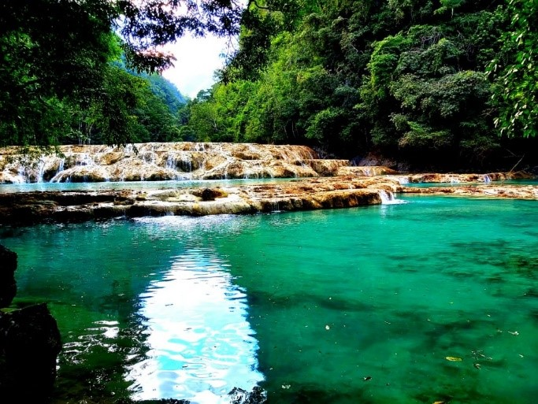
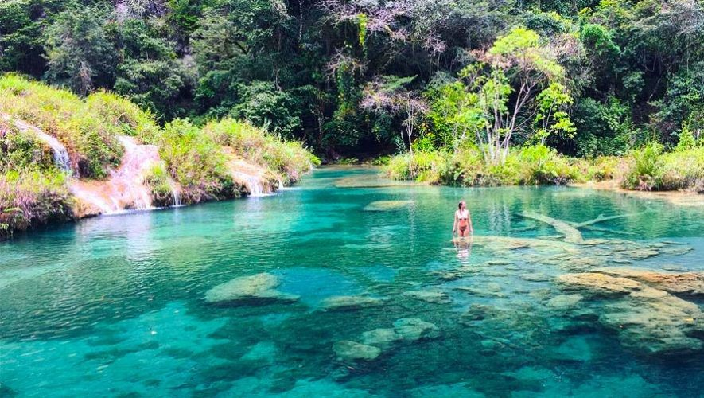

Semuc Champey (donde el río se esconde bajo las piedras), es un enclave natural localizado próximo al municipio guatemalteco de Lanquín (12 km aprox. al sur de Lanquín), en el departamento de Alta Verapaz, Guatemala. En el mismo, en medio de un espeso bosque tropical se halla un puente natural de piedra caliza de unos 300 metros de largo por el cual fluye el río Cahabón y en cuyos alrededores se encuentran una gran cantidad de pozas de 1 a 3 m de profundidad, cuyo color verde turquesa o color jade cambia a lo largo del año variando con el clima, el sol y otros factores naturales. Al final puede observarse al río Cahabón como se interna en una caverna de piedra caliza, área muy peligrosa para acercarse dentro del río por la fuerza del agua, sólo se permite observar a distancia este fenómeno geográfico natural.
Semuc Champey fue declarado en 1999 Monumento Natural por el entonces presidente de la República de Guatemala, Álvaro Arzú Irigoyen y se encuentra muy próximo geográficamente al parque nacional Grutas de Lanquín con el que comparte un centro de visitantes para dar cobertura al turista.
Debido al bosque subtropical que rodea al lugar, el mismo cuenta con una enorme riqueza ecológica, entre la que se han identificado más de 100 especies de aves; 34 de mamíferos, 25 de reptiles y anfibios; y 10 de peces además de más de 120 especies distintas de árboles. Consta con un mirador de 700 m de altura para observar los 350 m de largo de las pozas naturales que conforman "Semuc Champey", con cataratas de hasta 40 pies de alto y todas las pozas alimentadas por riachuelos del lugar.
Para llegar a este lugar, se debe viajar de la Ciudad de Guatemala por la carretera al Atlántico, llegar al pueblo del Rancho, km 81, desviarse en busca de la ciudad de Cobán, km 216, y de allí a Lanquín.

